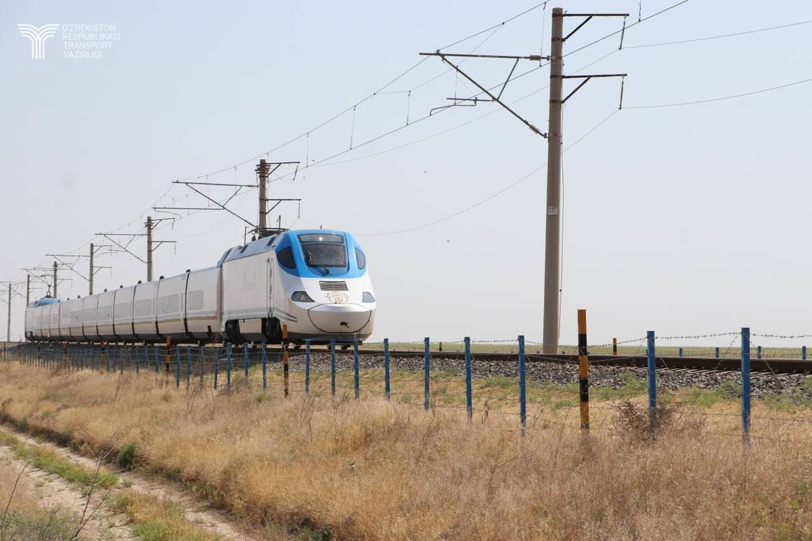
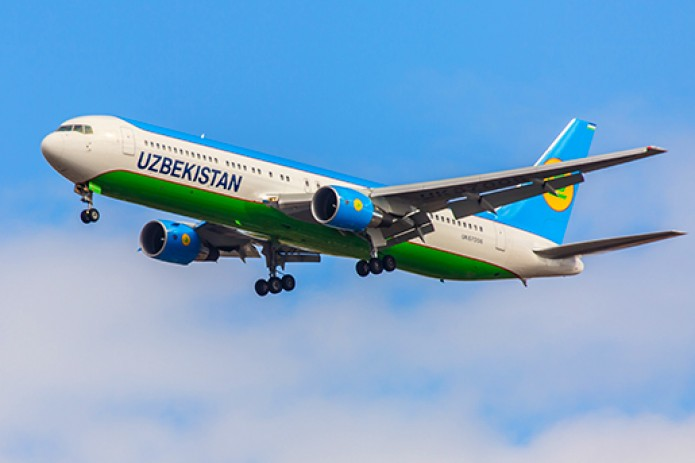

"Transport va Logistika inqilobi:"
Shaharlarni o'zaro bog'laydigan qo'shimcha 500 km tezyurar temir yo'llar qurilishi boshlandi. Viloyatlararo qatnovdagi vaqt yo'qotilishi va transport tanqisligi masalasi yangi besh yillik dastur orqali tizimli hal etilmoqda.
O‘zbekiston transport tizimidagi bu ulkan o‘zgarishlar nafaqat iqtisodiy rivojlanish, balki aholining turmush sifatini yangi bosqichga olib chiqishga qaratilgan. 2026-yil mamlakatimiz logistika xaritasida tub burilish yasaydigan yil sifatida tarixga kirmoqda.
Transport va logistika sohasidagi strategik o‘zgarishlar (2026)
2026-yilning boshidan e'tiboran, O‘zbekistonda shaharlarni o‘zaro uzviy bog‘laydigan qo‘shimcha 500 kilometr tezyurar temir yo‘llar qurilishi rasman boshlandi. Ushbu loyiha yangi besh yillik rivojlanish dasturining markaziy qismi bo‘lib, u viloyatlararo transport tanqisligini batamom bartaraf etishga xizmat qiladi. Ayniqsa, "Toshkent – Samarqand" yo‘nalishida butunlay yangi, alohida ajratilgan yuqori tezlikdagi liniya qurilishi bu sohadagi eng kutilgan yangilikdir. Bu liniya ishga tushgach, yo‘lovchilar vaqti 20-30 foizga tejalishi kutilmoqda.


Shu bilan birga, temir yo‘l tarmog‘ini kengaytirish ishlari faqat asosiy magistrallar bilan cheklanib qolmayapti. Kelgusi yillarda 110 kilometrlik yangi tarmoq qurilib, Bo‘ka, Piskent, Bekobod va Boyovut tumanlari hamda Nurafshon shahri poytaxt bilan to‘g‘ridan-to‘g‘ri temir yo‘l orqali bog‘lanadi. G‘arbiy hududlarda esa Nukus – Miskin – Urganch – Buxoro yo‘nalishini to‘liq elektrlashtirish va yangi tezyurar poyezdlar qatnovini yo‘lga qo‘yish orqali turizm salohiyati keskin oshirilmoqda.
Logistika inqilobining yana bir muhim bo‘g‘ini bu — "avtoban"lar tizimidir. Besh yillik dastur doirasida Andijondan Qo‘ng‘irotgacha, Toshkentdan Termizgacha bo‘lgan 4 ming kilometrlik magistral yo‘llar xalqaro standartdagi sifatli yo‘llarga aylantirilmoqda. 2026-yil yakuniga qadar Qoraqalpog‘iston, Buxoro va Surxondaryo hududlaridan o‘tuvchi 300 kilometrlik yo‘llarni rekonstruksiya qilish ishlari to‘liq yakunlanadi. Birlashgan Millatlar Tashkiloti tahlillariga ko‘ra, bunday sifatli yo‘llar mamlakat iqtisodiyotining har yili kamida 2 foizga qo‘shimcha o‘sishiga zamin yaratadi.
Aviatsiya sohasida ham 2026-yil katta o‘sish yili bo‘ladi. Aviaparkdagi havo kemalari sonini 120 taga yetkazish va ichki reyslarni subsidiyalashning yangi tizimi orqali chipta narxlari arzonlashishi ta’minlanmoqda. Bu chora-tadbirlar nafaqat logistika xarajatlarini kamaytiradi, balki O‘zbekistonni mintaqaviy transport xabiga aylantirish yo‘lidagi muhim qadamdir. Toshkent, Samarqand va Buxoro kabi yirik shaharlardagi temir yo‘l vokzallarini xususiy sheriklik asosida boshqaruvga berish esa xizmat ko‘rsatish sifatini yangi, xalqaro darajaga ko‘taradi.